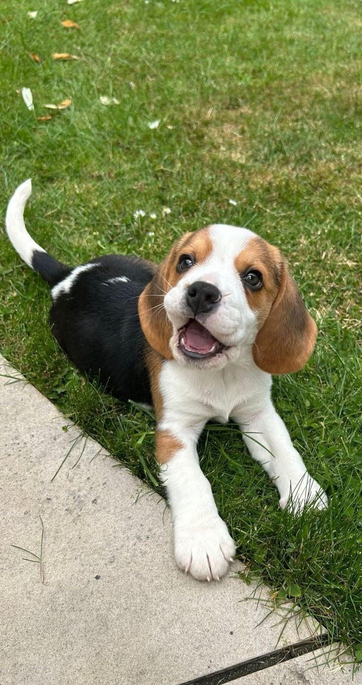
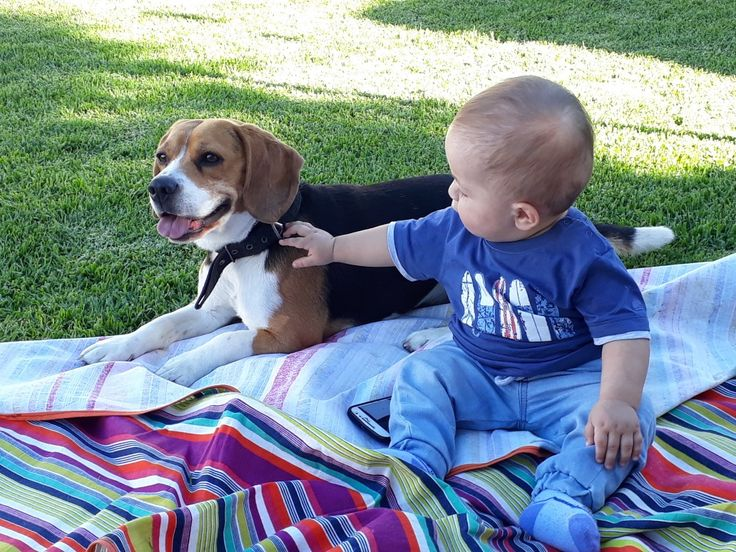
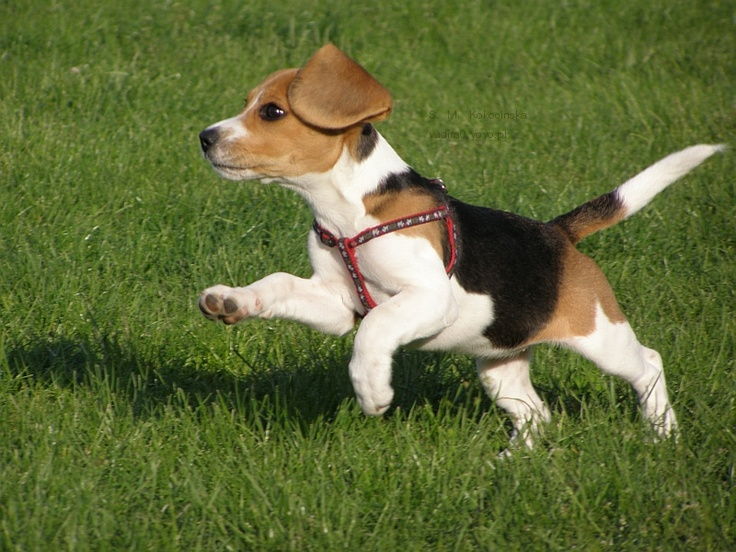
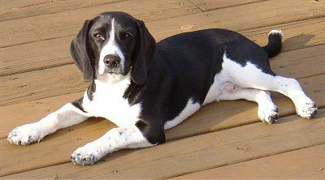
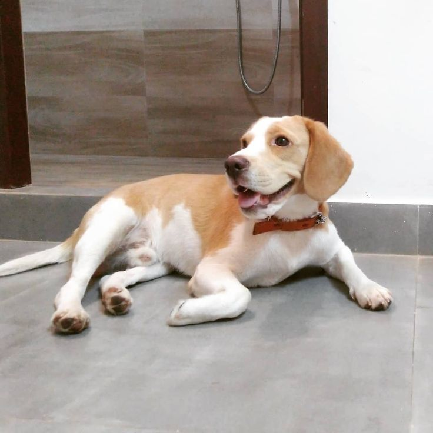

Beagle
Il Beagle è una delle razze più amate al mondo grazie alla sua taglia contenuta, all'aspetto simpatico e alle sue inconfondibili orecchie morbide.
Originariamente selezionato come cane da caccia al seguito delle mute, è un segugio incredibilmente vivace, curioso e socievole. Il suo carattere allegro e affettuoso lo rende un compagno meraviglioso per famiglie dinamiche e persone attive.
Caratteristiche
Tempo e Routine

Richiede grande dedizione quotidiana e attività fisica costante.
Cura e Impegno
Mantello facile e toelettatura poco impegnativa.
Valutazione dello spazio
Adattabile, ma necessita di spazi adeguati e passeggiate frequenti.
Maggiori informazioni
Tempo e Routine
È un cane da caccia molto attivo che ha bisogno di camminare, correre e annusare ogni giorno.
Le passeggiate devono essere ricche di stimoli per un Beagle che non vuole sentirsi annoiato ed esprime la sua vitalità anche fuori casa.
Le passeggiate devono essere ricche di stimoli per un Beagle che non vuole sentirsi annoiato ed esprime la sua vitalità anche fuori casa.
Cura e Impegno
Il pelo è corto, fitto e impermeabile; richiedendo solo spazzolate periodiche per rimuovere i peli morti.
È importante controllare e pulire regolarmente le lunghe orecchie pendenti per prevenire infezioni e monitorare il peso.
È importante controllare e pulire regolarmente le lunghe orecchie pendenti per prevenire infezioni e monitorare il peso.
Valutazione dello spazio
Vive benissimo in appartamento se gli vengono garantite uscite frequenti ed esplorative.
Se ha un giardino, deve essere ben recintato, poiché la sua forte propensione all'esplorazione olfattiva lo spinge a seguire tracce anche all'esterno.
Se ha un giardino, deve essere ben recintato, poiché la sua forte propensione all'esplorazione olfattiva lo spinge a seguire tracce anche all'esterno.
Pro e Contro
✓ Per chi è ideale
- Carattere estremamente affettuoso, socievole con tutti
- Taglia contenuta e struttura robusta, adatto a famiglie attive
- Ottima convivenza con bambini e altri cani
▲ Cosa tenere a mente
- Forte istinto olfattivo e tendenza a distrarsi facilmente seguendo tracce
- Può essere molto vocale e abbaiare/ululare se lasciato solo o poco stimolato
- Grande appetito con tendenza ad ingrassare se non fa movimento regolare
Momenti ed espressioni



Palette di colori


